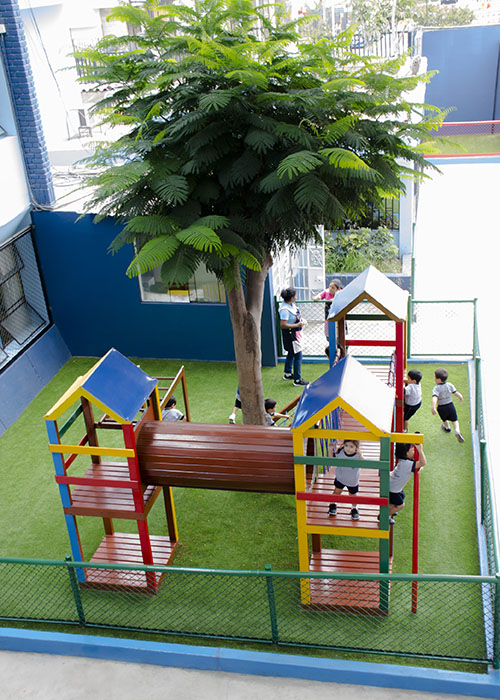

El Nivel Inicial del Colegio Cristo Rey del Norte está diseñado para proporcionar a los niños de 3 a 5 años un entorno seguro y estimulante, fomentando la creatividad, la exploración y el aprendizaje significativo.

Aprendizaje basado en el juego: Estrategias didácticas innovadoras para fomentar la creatividad.
- ✅ Actividades prácticas que estimulan el desarrollo sensorial y cognitivo.
- ✅ Uso de material concreto para reforzar el pensamiento lógico y matemático.
- ✅ Introducción a las letras y números mediante dinámicas visuales y auditivas.

Desarrollo de habilidades socioemocionales: Enseñanza de valores como respeto y solidaridad.
- ✅ Programas de inteligencia emocional para que los niños gestionen sus emociones.
- ✅ Espacios para fomentar la comunicación, el trabajo en equipo y la empatía.
- ✅ Actividades de socialización para fortalecer la autonomía y la confianza.

Infraestructura y Recursos: Aulas seguras, áreas de recreación y salas de psicomotricidad.
- ✅ Juegos educativos al aire libre para el desarrollo motor.
- ✅ Ambientes acondicionados con mobiliario ergonómico y seguro.
- ✅ Biblioteca infantil con cuentos y libros adecuados para la edad.